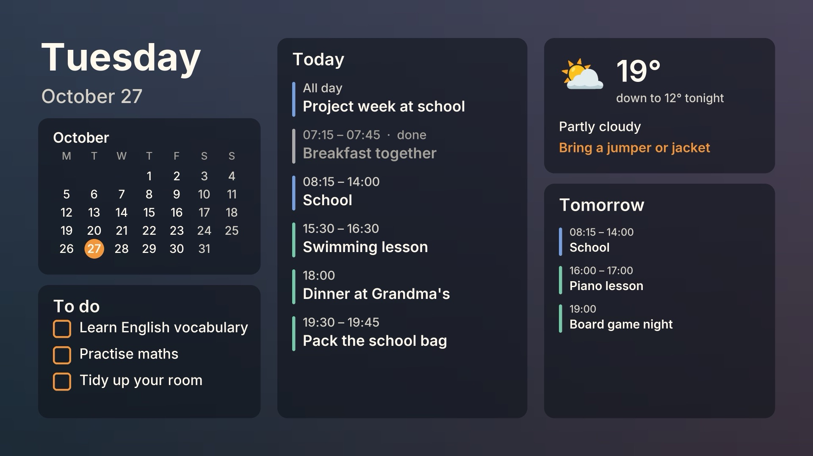
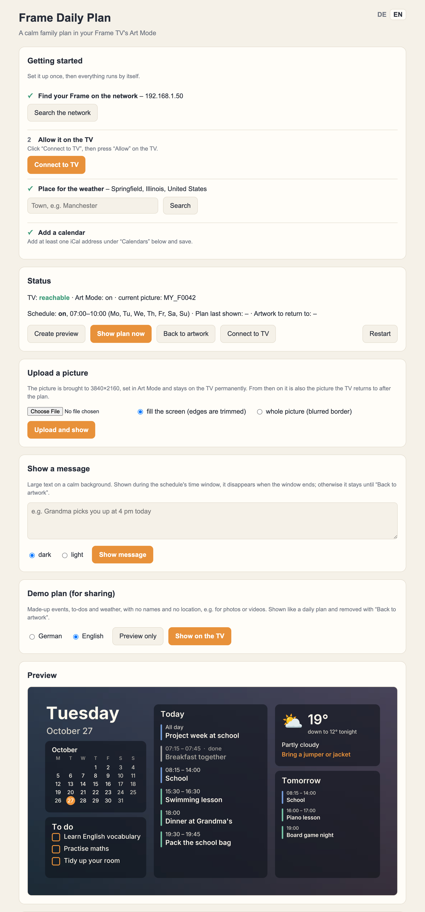
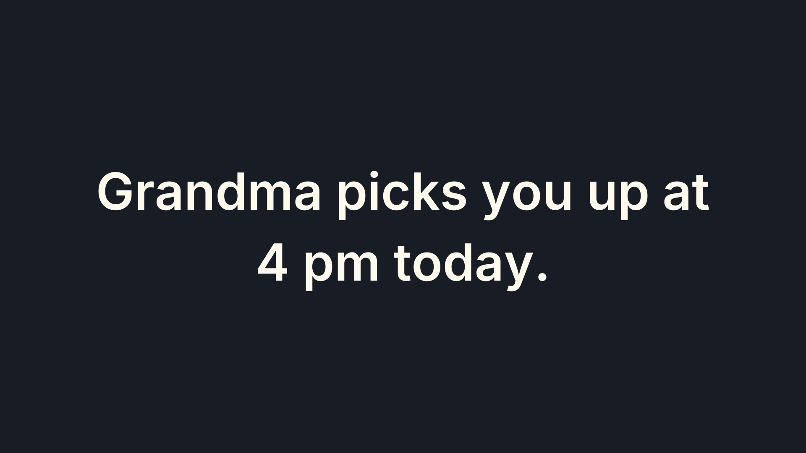

Frame Daily Plan
A calm morning planner for the Samsung The Frame. Every morning the family's day appears in Art Mode instead of a painting. Afterwards your artwork comes back.
Code and install guideQuick install

What it does
Your calendars
Any iCal feed: Google Calendar, school calendars, a separate to-do calendar. Each one gets a colour.
Weather and holidays
Weather with a "what to wear" hint from Open-Meteo (no key). Public holidays for about 150 countries.
Blends into the room
The plan sits on a blurred copy of the artwork it replaces. Past events turn grey, and nothing is ever cut off.
Never in the way
It never interrupts TV. It only removes images it uploaded itself. No Samsung account, no cloud.


What you need
- A Samsung The Frame on your home network (tested on a 2017 model; newer ones should work, please report)
- An always-on machine with Docker, e.g. a Synology NAS (Container Manager), a Raspberry Pi or a home server
- Your calendars as iCal links (Google Calendar: "Secret address in iCal format")
Quick install
Put this in a docker-compose.yml (on a Synology: Container Manager → Project → Create), start it, and open http://<your-server>:8765. The page walks you through finding the TV, allowing it, your town and your calendars.
services:
frame-daily-plan:
image: ghcr.io/justifytechexpenses/frame-daily-plan:latest
container_name: frame-daily-plan
restart: unless-stopped
network_mode: host
environment:
TZ: Europe/London
volumes:
- ./data:/data